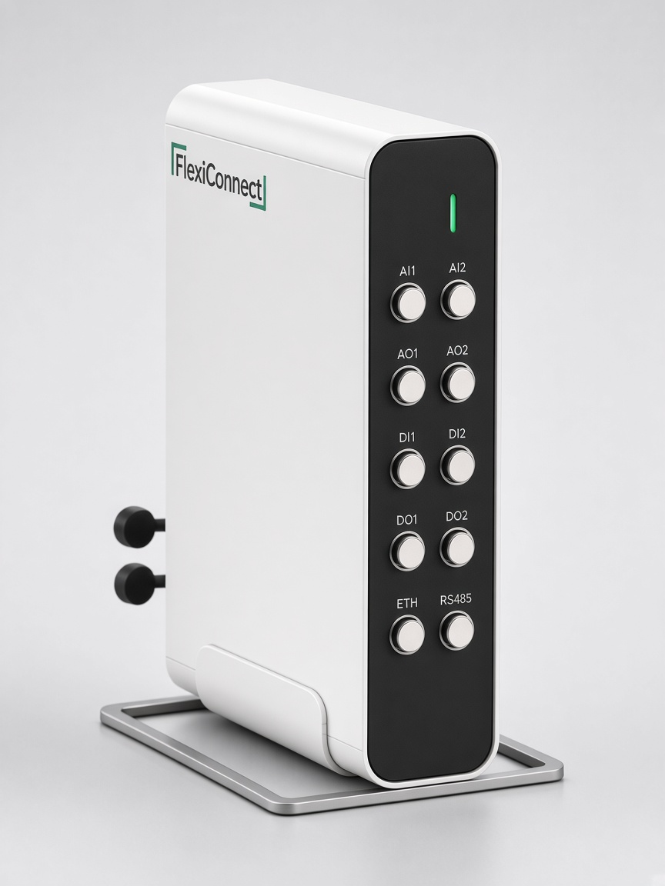

Procomm Dynamics
The company. Machines with Context. — automation built for laboratory chemistry.
FlexiFlow turns the jacketed glass reactor you already own into a recipe-driven system, with FlexiConnect control hardware and a complete record of every run.
The company. Machines with Context. — automation built for laboratory chemistry.
The product. Recipe automation, supervision and experiment records for jacketed glass reactors.
The physical controller and instrument interface inside FlexiFlow.
Read temperatures and signals with quality flags. Every reading is timestamped.
The local recipe engine on FlexiConnect runs ramps, holds and doses beside the reactor.
Every event, timestamp and operator action goes into the run history.
Physical AI is the direction. Recipe control and records are today.
Designed for automating existing lab-scale jacketed glass reactors.
Wire RTDs, analog and digital I/O, and serial instruments into FlexiConnect. Front LEMO for sensors and actuators; rear panel for communications.
Load a crystallisation or process recipe. FlexiConnect executes ramps, holds, seeding and dosing locally.
Events, sensor values and operator actions are written into an audit trail designed toward electronic-record requirements.
// 03 · OVERNIGHT RUNSCROLL TO PLAY
Satin stainless or powder-coated white, with a graphite front panel. It wires into the instruments around your vessel.

CAD render · satin stainless · black front panel

CAD render · white body · graphite front panel
Example: cooling + antisolvent crystallisation, adapted from Pickles et al., CrystEngComm 2024.
example_recipe · 7 steps · ~9 h · illustrative
Example recipe adapted from published research. Illustrative, not a validated procedure. More domains — chemical, fermentation, fertilisers and others — on Applications →
A missing reading stops the step. It never completes it.
Under developmentNo moving on until the intended amount is in.
Under developmentA person decides what happens next.
Under developmentIn the design, even if software does not respond.
Under developmentOur long-term vision is physical AI for laboratory automation: machines that sense, interpret process context and act through controlled execution. Today FlexiFlow automates recipes and records every run. The rest is the direction we are building toward.
OEM partnerships are an intended direction, particularly for lab reactor manufacturers.
OEM partner formTell us about your lab, your vessels and the instruments you want connected.
Request a demo